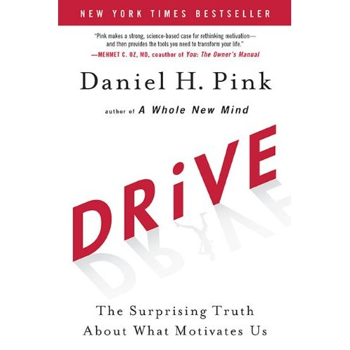

About Us


Why business?
Why are you here?
learn new tools
be more efficient
get more done with less/easier
Software
Developer Focus
SCRUM
SCRUM?
Test Driven Development
Behavior Driven Development
Developer Driven Development
how does an open source team work?
maintainer or small team of committers
offline communication channels
- email list
- IRC
occasional in-person meetings for big goals
individuals choose what they want to work on
- still get bugs, unsexy things
- teams self assemble to solve larger problems
could your company work this way?
it is possible
everyone chooses what they work on
offline communication
chat, email
determine larger goals in chat, keep iterating
no roadmaps
if you keep hearing about it, someone will do it
no feature backlog
- http://gettingreal.37signals.com/ch05_Forget_Feature_Requests.php
no daily in-person meetings
make small decisions offline or in code
people can work from anywhere, anytime, in any style
teams self-form and shuffle as needed
Developer Driven Development
- autonomy
- power / responsibility
- no meetings
- no feature requests / backlog
- no roadmap
- no vacations
- free beer
pre-requisites
client work probably would not work well
own your product
no deadlines
have to love what they are working on .notes have to be self driven, can work with no specific direction
passionate developers
devs have to talk to each other a lot, in many different ways
great communication
- chat
- in-person
- drinking
up to 20 still works fine .notes larger companies do multiple small teams that this could work for
small teams
or, gatekeepers
open source teams always use their product, so they know the pain points
best if the team can use the product
advantages
great productivity
- way less overhead
- everyone is always interested in what they are doing
very agile
more ideas
dumb ideas are not worked on
keep your devs
- more flexible
- always working on something they want
- more skin in the game
- better retention (recruiting is very expensive)
Supporting Evidence

Business Minimalism
Open Source

- autonomy
- mastery
- purpose
perils of extrinsic motivators
why outsourcing is difficult
take money off the table
if you want engagement, self direction is better
purpose motive is more powerful than the profit motive
The Best Motivators
Autonomy
People want to have control over what they do
Mastery
People want to get better at what they do
Purpose
People want to be part of something that is bigger than they are
- autonomy
- mastery
- purpose
Skunkworks
ROWE
- Lockheed Martin (Advanced Development Programs)
- Best Buy (ROWE)
- Atlassian (FedEx Day)
- Google (20%)
- GitHub (100%)
overview
Developer Driven Development
- autonomy
- power/responsibility
- no meetings
- no feature backlog or roadmap
- free beer
- autonomy
- mastery
- purpose
thanks!
questions?
resources
- github.com/schacon/ddd
- schacon.github.com/ddd
- schacon@gmail.com
- Drive, Daniel Pink - TED Talk